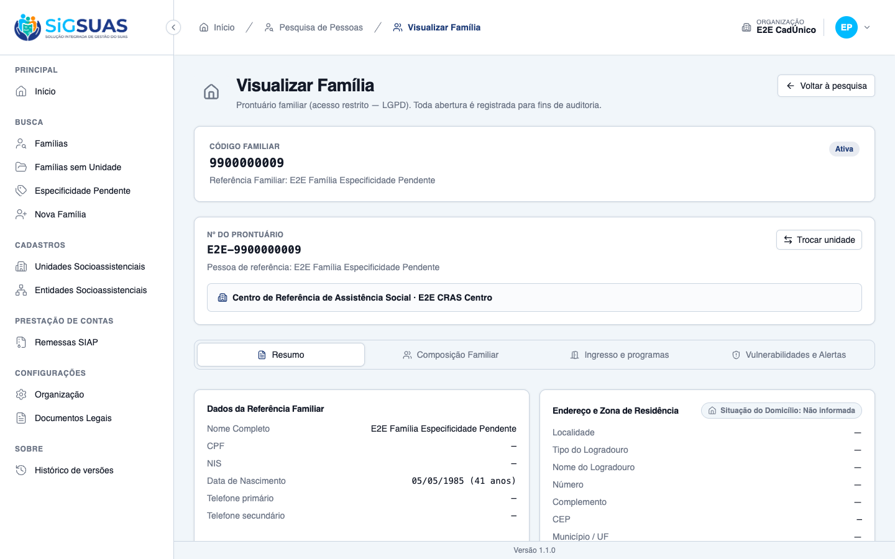
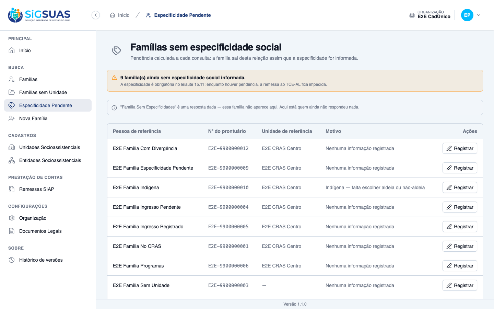
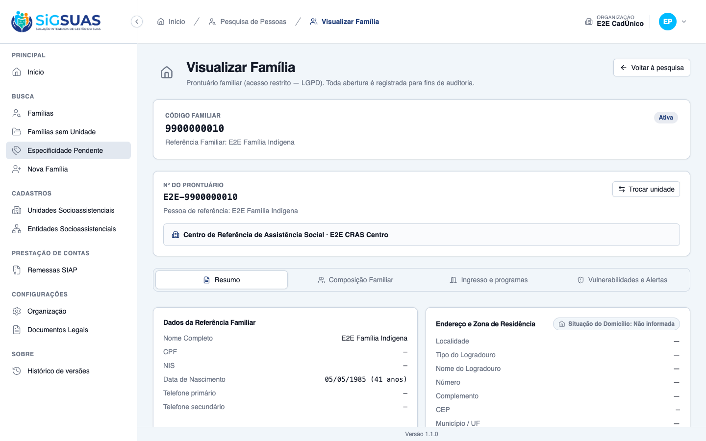
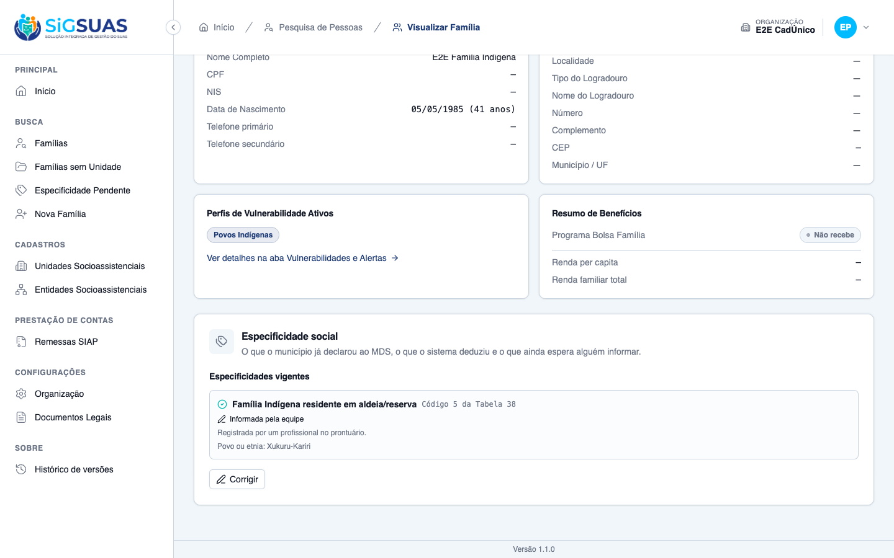
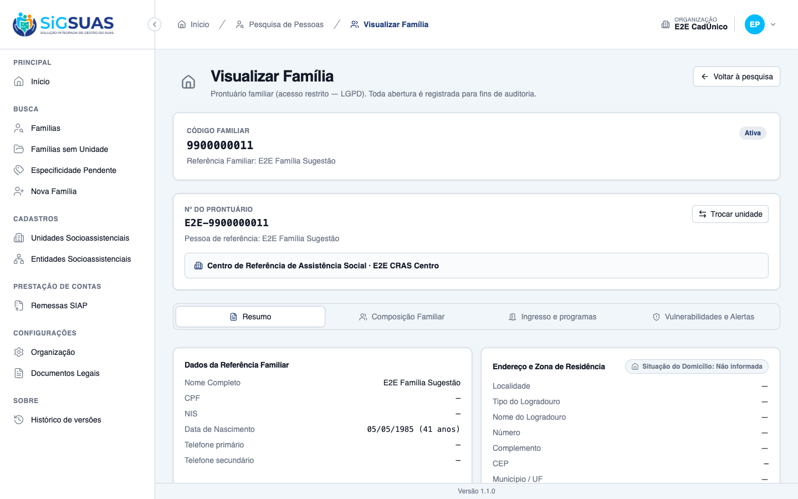
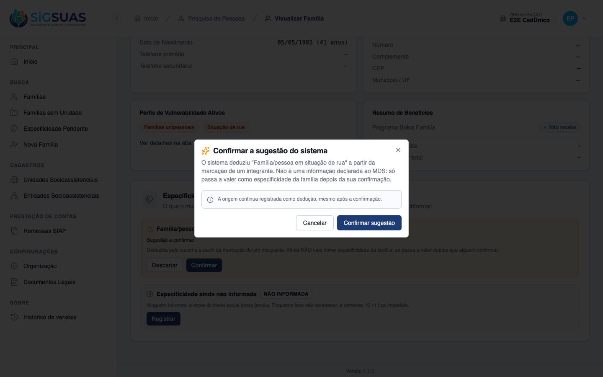
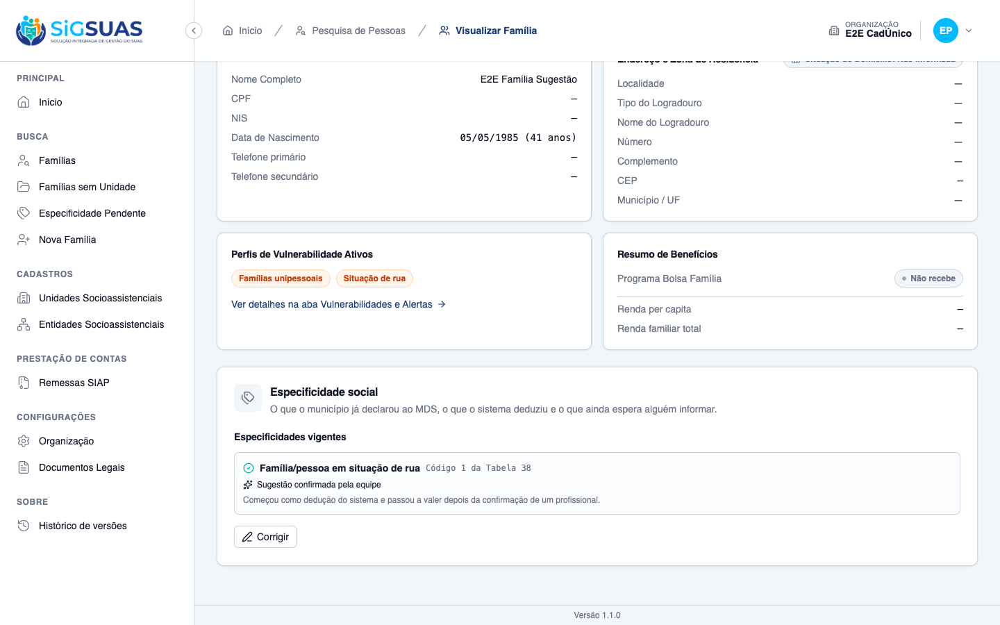
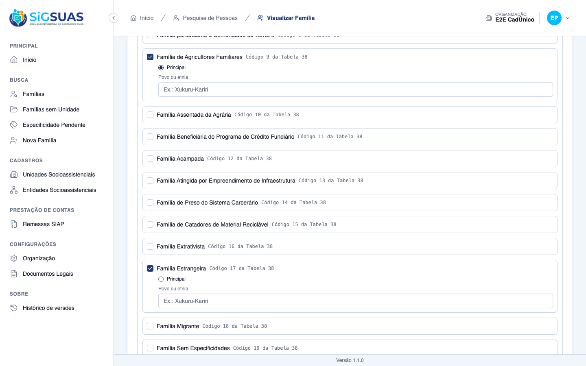
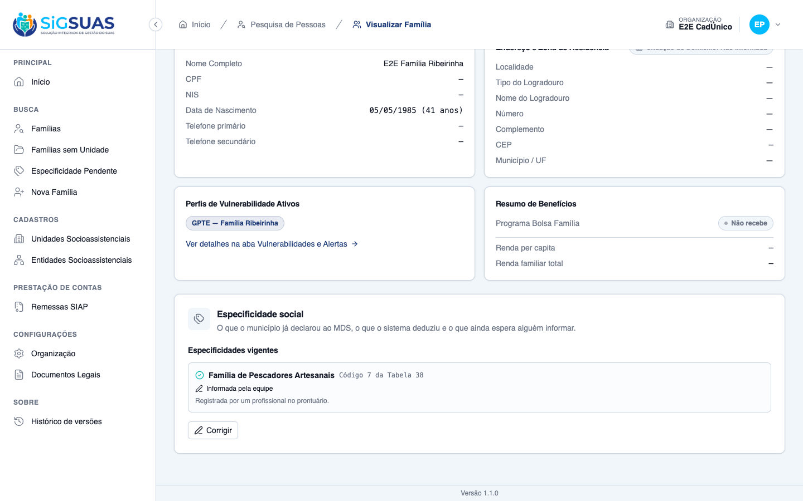
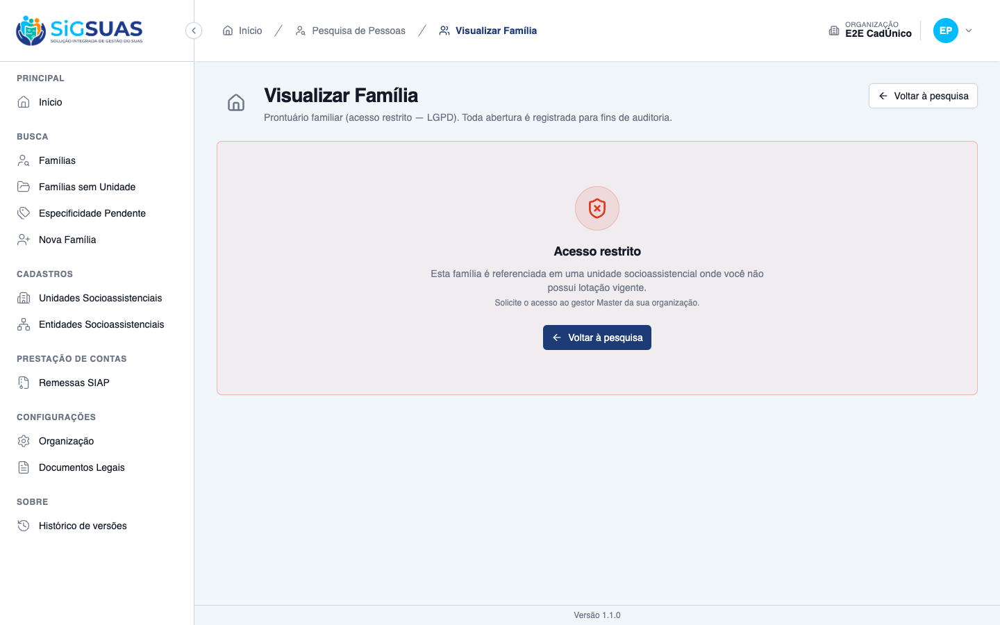

11 critérios de aceite. <b>9 evidenciados no navegador</b> e <b>2 por suíte automatizada</b> (CA02, por a massa não conter família com indicador quilombola, e CA10, que exigiria processar uma nova remessa do CadÚnico). Nenhum critério reprovado, e <b>nenhum defeito encontrado</b> — é a história mais limpa do épico até aqui. A suíte fecha <b>71 testes / 281 asserções</b>. Três verificações merecem destaque: as conversões de código com zeros à esquerda estão corretas nos três casos de risco, a família indígena chega sem nenhuma linha (o sistema não escolhe por ninguém entre aldeada e não aldeada) e o texto livre de povo/etnia não vaza para a trilha de auditoria. Detalhes em “Observações e ressalvas”.
| CA | Critério | Status |
|---|---|---|
| CA01 | Especificidade derivada do grupo populacional | ATENDIDO · navegador |
| CA02 | Quilombola derivada do indicador | ATENDIDO · automatizado |
| CA03 | Sem especificidade é valor informado | ATENDIDO · navegador |
| CA04 | Família sem informação alguma fica pendente | ATENDIDO · navegador |
| CA05 | Indígena exige escolha do profissional | ATENDIDO · navegador |
| CA06 | Situação de rua entra pré-marcada e exige confirmação | ATENDIDO · navegador |
| CA07 | Estrangeira e migrante são informadas manualmente | ATENDIDO · navegador |
| CA08 | Corrigir valor derivado | ATENDIDO · navegador |
| CA09 | Mais de uma especificidade | ATENDIDO · navegador |
| CA10 | Importação seguinte não sobrescreve | ATENDIDO · automatizado |
| CA11 | Acesso restrito à unidade | ATENDIDO · navegador |
Critério (Gherkin): Dado que a família Silva foi importada do CadÚnico com o grupo "204 Família Ribeirinha" Quando eu abrir o prontuário dela Então a especificidade social consta como "Família Ribeirinha", correspondente ao código 3 da Tabela 38 E está identificada como derivada do CadÚnico
Como foi testado: Prontuário da família importada com o grupo populacional 204 → bloco Especificidade social.
Critério (Gherkin): Dado que a família Souza foi importada com o indicador de família quilombola Quando eu abrir o prontuário dela Então a especificidade consta como "Família Quilombola"
Como foi testado: Evidência automatizada. A massa de evidência não contém uma família importada com o indicador de quilombola — ela cobre a derivação por grupo populacional (CA01), por indicador indígena (CA05) e por marcação de integrante (CA06).
Evidência por cobertura automatizada — ver Anexo.
Critério (Gherkin): Dado que a família Lima foi importada com o grupo "0 Nenhuma" Quando eu abrir o prontuário dela Então a especificidade consta como "Família Sem Especificidades" E isso não gera pendência, porque é um valor declarado
Como foi testado: Prontuário da família importada com o grupo 0 Nenhuma, e conferência da relação de pendências.
Critério (Gherkin): Dado que a família Costa foi cadastrada sem qualquer informação de grupo populacional ou especificidade Quando eu abrir o prontuário dela Então a especificidade aparece sem valor E a família consta na relação de pendências como especificidade não informada
Como foi testado: Prontuário de uma família sem qualquer insumo de especificidade, e menu Especificidade Pendente.


Critério (Gherkin): Dado que a família Xukuru foi importada com o indicador de família indígena Quando eu abrir o prontuário dela Então a especificidade aparece pendente, indicando que é preciso escolher entre residente e não residente E nenhum dos dois códigos foi atribuído pelo sistema E, ao escolher, posso registrar o povo ou etnia
Como foi testado: Prontuário da família importada com indicador indígena → escolha do caso aplicável + povo/etnia → Registrar escolha.


Critério (Gherkin): Dado que a família Alves tem um integrante marcado em situação de rua Quando eu abrir a especificidade social dela Então "Família/pessoa em situação de rua" aparece sugerida, com a indicação de que foi deduzida E só passa a valer depois que eu confirmar
Como foi testado: Prontuário da família com integrante marcado em situação de rua → Confirmar → confirmação no diálogo.



Critério (Gherkin): Dado que a família Mendoza é estrangeira Quando eu registrar a especificidade "Família Estrangeira" Então o valor é salvo E não havia como o sistema derivá-lo de nenhum dado existente
Como foi testado: Família sem especificidade → Registrar → marcação de “Família Estrangeira” na Tabela 38 → salvar.

Critério (Gherkin): Dado que a família Silva recebeu "Família Ribeirinha" derivada do CadÚnico E que a equipe verificou em atendimento que a informação está errada Quando eu alterar a especificidade Então o novo valor é salvo E a trilha de auditoria registra a alteração, identificando que substituiu um valor derivado
Como foi testado: Na família com especificidade derivada, Corrigir → desmarcar “Família Ribeirinha” e marcar “Família de Pescadores Artesanais” → salvar.

Critério (Gherkin): Dado que a família Souza é quilombola e também de agricultores familiares Quando eu registrar as duas especificidades e indicar a principal Então ambas constam do prontuário E a remessa leva a que foi indicada como principal
Como foi testado: Marcação de duas especificidades no formulário e escolha explícita da principal antes de salvar.
Critério (Gherkin): Dado que corrigi a especificidade da família Silva no prontuário E que a remessa seguinte do CadÚnico traz o grupo populacional anterior Quando a importação for processada Então o valor do prontuário é mantido E a divergência é apresentada para a equipe resolver
Como foi testado: Evidência automatizada. Exercer este critério no navegador exigiria processar uma nova remessa do CadÚnico sobre a família corrigida — um ciclo de importação que está fora do alcance deste dossiê.
Evidência por cobertura automatizada — ver Anexo.
Critério (Gherkin): Dado que sou Operacional lotado apenas no "CRAS Centro" Quando eu tentar registrar a especificidade de uma família referenciada no "CREAS" Então o prontuário não é acessível a mim, conforme o corte de acesso vigente
Como foi testado: Como operador, acesso direto ao prontuário da família referenciada no E2E CREAS. Reexecutado após a revisão da RN08 da #10617.

Em 27/08/2026 a regra de acesso da HU #10617 foi revisada: a família referenciada em unidade fora da lotação do profissional deixou de ser tratada como registro inexistente (404) e passou a responder acesso negado (403), com o motivo declarado.
O CA11 desta história foi reexecutado após a mudança e segue atendido: o critério exige que o prontuário não seja acessível, sem especificar o código de retorno. Nenhum outro critério desta história é afetado.
A RN09 do chamado reconhece que o campo de especificidade do leiaute 15.11 é singular, enquanto o instrumento do MDS permite múltiplas marcações. A regra declara que a forma de declarar isso ao Tribunal depende de resposta dele e que, enquanto a resposta não vier, a remessa leva uma especificidade — a indicada pelo município como principal.
O CA09 foi evidenciado exatamente sobre essa premissa: as duas especificidades constam do prontuário e a escolhida como principal é a que segue para a remessa, com rótulo explícito na tela (“Principal — vai na remessa”).
Consequência se a resposta do Tribunal for outra: a estrutura de dados já suporta múltiplas especificidades por família, então acomodar uma resposta diferente é mudança na geração da remessa, não no prontuário. O que foi validado aqui — registrar todas as que se aplicam e marcar uma como principal — permanece válido em qualquer cenário.
O campo “povo ou etnia” da família indígena é texto livre e identifica um grupo étnico — dado sensível. Registramos um valor pelo navegador e conferimos a trilha: zero ocorrências do texto e de ethnicity_note no activity_log, enquanto o valor está corretamente gravado na tabela da especificidade.
Há teste dedicado sustentando isso: “it NEVER writes ethnicity_note into the activity log (§10/§14)”. Somado ao mesmo cuidado verificado na #10619 com o motivo do ingresso, forma um padrão consistente no épico: o texto livre do profissional fica no dado, não na auditoria.
O leiaute 15.11 recebe inteiros, mas a importação traz códigos com zeros à esquerda. Três casos foram verificados na tela:
'003' → “Código 3 da Tabela 38” (CA01);'019' → “Código 19 da Tabela 38” (CA03);'000' → “Grupo populacional 0 — Nenhuma” — o caso que mais engana, porque um zero mal convertido vira ausência de informação e a família cairia indevidamente na relação de pendências.Internamente os códigos seguem zero-padded (os controles da tela usam identificadores como specificity-checkbox-009), e a apresentação converte para inteiro. A separação está coerente nas duas pontas.
É a decisão de produto mais delicada desta história, e a interface a sustenta em três lugares diferentes, com a mesma leitura:
A suíte guarda a fronteira com um teste explícito: “it accepts an EMPTY list — which is different from declaring 019”. Vale registrar porque, do ponto de vista do banco, os dois estados são fáceis de confundir — e confundi-los significaria declarar ao TCE-AL algo que ninguém afirmou.
Verificado em banco antes de qualquer ação: a família importada com indicador indígena não possui nenhuma linha de especificidade. O sistema poderia ter escolhido um dos dois códigos (5 ou 6) e deixado para a equipe corrigir depois; não escolheu.
A diferença importa porque o código 5 e o 6 descrevem realidades distintas — residir ou não em aldeia/reserva — e a escolha errada seria declarada ao MDS como se fosse afirmação do município. A relação de pendências trata esse caso com motivo próprio (“Indígena — falta escolher aldeia ou não-aldeia”), o que permite à equipe encontrar exatamente essas famílias.
Os critérios exigiram registrar a escolha indígena com povo/etnia (CA05), confirmar uma sugestão (CA06), registrar duas especificidades manuais com principal (CA07/CA09) e substituir um valor derivado (CA08). Todas as alterações foram revertidas ao final, e o estado confirmado família a família: a derivada voltou a 003 derived_cadunico como principal, a declarada segue 019, as duas pendentes voltaram a não ter linha e a sugestão voltou a não confirmada.
Nota operacional: a restauração precisou remover a especificidade manual ANTES de reativar a derivada — o índice fss_family_primary_unique recusa duas principais simultâneas. O tropeço serviu de evidência adicional para o CA09.
PASS Tests\Unit\Family\DeriveFamilySpecificitiesActionTest
✓ it NEVER assigns 005 or 006 to an imported indigenous family — no r… 0.45s
✓ it translates the traditional group into the Tabela 38 code (CA01/R… 0.03s
✓ it derives quilombola straight from the import indicator (CA02/RN04… 0.02s
✓ it turns the group "0 Nenhuma" into the DECLARED value 019 — not a… 0.02s
✓ it prefers the informative specificity over 019 when the file says… 0.02s
✓ it SUGGESTS homeless situation from one member — it does not declar… 0.02s
✓ it does not suggest homeless situation from an UNLINKED member (§8) 0.02s
✓ it never overwrites a manual row and records the divergence instead… 0.03s
✓ it does not open a divergence when the manual record already contai… 0.02s
✓ it is idempotent across re-imports and never re-opens a confirmed s… 0.02s
✓ it follows the lookup when the MAP changes — without touching PHP (… 0.03s
✓ it writes nothing for a family with no group, no indicator and no h… 0.02s
PASS Tests\Unit\Models\SocialSpecificityTest
✓ it has fillable name, code and is_active 0.01s
✓ it casts is_active to boolean and defaults to true 0.01s
✓ it uses HasUuid trait 0.01s
✓ it uses SoftDeletes trait 0.01s
✓ it uses HasFactory trait 0.01s
✓ it persists with uuid auto-generated 0.01s
PASS Tests\Feature\Api\Relationals\SocialSpecificityControllerTest
✓ it lists only active social specificities 0.03s
✓ it returns up to 30 specificities and flags searchable above the th… 0.01s
✓ it exposes only id, name and code 0.01s
✓ it filters by search on name (case-insensitive) 0.01s
✓ it filters by search on code 0.01s
✓ it rejects unauthenticated request with 401 0.02s
✓ it rejects search shorter than 2 characters 0.01s
✓ it accepts requests from the client guard 0.01s
✓ it caches the active specificity set 0.01s
✓ it invalidates the cache when a specificity is created 0.01s
✓ it invalidates the cache on bulk deactivate 0.02s
✓ it drops a specificity from the cached set when it becomes inactive 0.01s
PASS Tests\Feature\Api\SocialSpecificityControllerTest
✓ it lists social specificities 0.02s
✓ it creates a social specificity 0.01s
✓ it shows a social specificity 0.02s
✓ it updates a social specificity 0.01s
✓ it deletes a social specificity 0.01s
✓ it validates required fields on create 0.01s
✓ it requires authentication 0.01s
✓ it filters social specificities by name 0.01s
✓ it sorts social specificities by code 0.01s
✓ it exposes is_active and defaults to true on create 0.01s
✓ it filters social specificities by is_active 0.02s
✓ it bulk activates social specificities 0.01s
✓ it bulk deactivates social specificities 0.01s
✓ it forbids bulk activate without the bulk-update permission 0.01s
✓ it validates uuids on bulk activate 0.01s
✓ it rejects integer ids on bulk activate 0.01s
PASS Tests\Feature\Api\TraditionalPopulationGroupMappingTest
✓ it refuses a mapping to a specificity that does not exist 0.02s
PASS Tests\Feature\Family\FamilySocialSpecificityTest
✓ it shows the specificity derived from the traditional group, marked… 0.05s
✓ it shows the quilombola specificity derived from the import indicat… 0.04s
✓ it treats "Sem Especificidades" as a DECLARED value — no pendency (… 0.05s
✓ it lists the family nobody informed anything about as PENDING (CA04… 0.04s
✓ it leaves the imported indigenous family PENDING and lets the profe… 0.05s
✓ it does NOT count an unconfirmed suggestion as a current specificit… 0.05s
✓ it saves a manual-only specificity that the system could never deri… 0.04s
✓ it records in the audit trail that the correction REPLACED a derive… 0.04s
✓ it accepts more than one specificity and sends the PRIMARY one to t… 0.04s
✓ it REJECTS two primaries in the Form Request (CA09 — 1st layer) 0.04s
✓ it REJECTS two primaries in the PARTIAL UNIQUE INDEX as well (CA09… 0.04s
✓ it REJECTS the same specificity twice for the family (unique index) 0.03s
✓ it keeps the record value on re-import and shows the divergence (CA… 0.05s
✓ it answers 404 for a family referenced in a unit the operator is no… 0.04s
✓ it NEVER writes ethnicity_note into the activity log (§10/§14) 0.05s
✓ it does not let the {family:uuid} binding swallow the literal pendi… 0.04s
✓ it only accepts ACTIVE items from the global Tabela 38 registry (RN… 0.04s
✓ it accepts an EMPTY list — which is different from declaring 019 (C… 0.04s
PASS Tests\Feature\Seeders\TraditionalGroupSpecificityMapSeederTest
✓ it maps the 13 CadUnico groups to the Tabela 38 by CODE on both sid… 0.02s
✓ it is IDEMPOTENT — running it twice changes nothing (§15.3) 0.02s
✓ it leaves NO active group without a correspondence — sanity query o… 0.02s
PASS Tests\Feature\TenantIsolation\FamilySocialSpecificityIsolationTest
✓ it applies BelongsToTenant to FamilySocialSpecificity 0.03s
✓ it does NOT leak the primary specificity of another municipality to… 0.03s
✓ it keeps the Tabela 38 registry and the CadUnico map GLOBAL — no te… 0.02s
Tests: 71 passed (281 assertions)
Duration: 2.41s